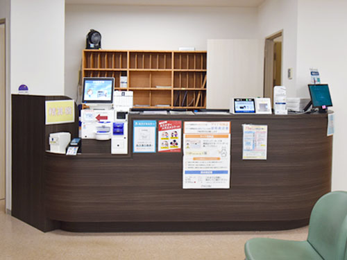

初診の方へ
-
- 01ご予約
- 事前にWEB診療予約をしてからご来院いただくと少ない待ち時間でご受診いただけます。
（※当日の状況により予約時間にご案内できない場合もございますので、あらかじめご了承ください。）
また、事前予約なしでもご受診可能です。
受付時間内にご来院ください。
-
- 02受付

- 当日は以下のものをお持ちください。
- マイナ保険証もしくは資格確認書
- お薬手帳
- 他院からの紹介状、検査画像などのデータ
- 公費受給者証
- 限度額認定証
受付にマイナ保険証もしくは資格確認書をご提示ください。
（※当日ご提示いただけない場合は、全額自己負担になります。）
WEB予約をされている方は、受付で予約済であることをお伝えください。
- 02受付
-
- 03問診票の記入

- 問診票をご記入いただき、受付へお渡しください。
ご来院前にWEB問診票をご記入いただいておくとスムーズです。
- 03問診票の記入
-
- 04待機

- お名前をお呼びするまで、待合スペースでお待ちください。
- 04待機
-
- 05診察

- お名前が呼ばれましたら、診察室へお入りください。
気になる症状やお伝えしたいことがあれば、医師にご相談ください。
（※必要に応じてレントゲン撮影やリハビリを行います。）
- 05診察
-
- 06お会計
- 再度、待合スペースでお待ちください。
待合スペースのモニターに番号が表示されましたら、精算機でお会計をお願いいたします。
お支払方法は現金のほか、クレジットカード（VISA、MASTER、JCB、AMEX、Diners、Discover）、交通系ICカード、nanaco、QUICPay、J-Debit、楽天Edy、WAON、銀聯カードもご利用いただけます。
※当院では領収書の再発行はできかねます。
ただし、支払い証明書を3,300円（税込）で発行することは可能です。窓口でご相談ください。